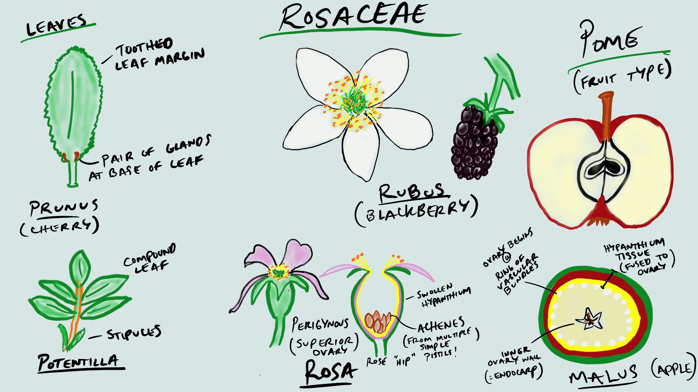

Lab 4: Fabaceae, Rosaceae, and intro to morphometrics
Evan Hersh
24 August, 2020
Fabaceae - Legume or Pea family
1. Herbs, vines, shrubs, or trees. 2. Leaves usually compound, alternate, stipulate. Leaflets often entire margined. Petioles and petiolules with a pulvinus. 3. Flowers perfect, zygomorphic or actinomorphic. Sepals usually 5, more or less connate. Petals 5. Stamens 10 or numerous, often diadelphous. Pistil simple, ovary superior, carpel 1, placentation parietal. 4. Fruit a legume or loment. 5. About 600 genera, 13,000 species, cosmopolitan.
 The Fabaceae in the broad sense is composed of 3 rather distinct subfamilies. They are often recognized as separate families. The Mimosoideae and Faboideae are specialized monophyletic groups that evolved from Caesalpinoideae.
The Fabaceae in the broad sense is composed of 3 rather distinct subfamilies. They are often recognized as separate families. The Mimosoideae and Faboideae are specialized monophyletic groups that evolved from Caesalpinoideae.
Mimosoideae, or, as a family, Mimosaceae flowers actinomorphic, stamens numerous, petals free or connate below. Acacia (acacia), Mimosa (sensitive plant).
Caesalpinoideae, or, as a family, Caesalpinaceae flowers zygomorphic, stamens 10, petals free. Cercis (redbud).
Faboideae (also called Papilionoideae or Lotoideae), or, as a family, Fabaceae flowers zygomorphic and papilionaceous, lower 2 petals fused to form a keel, the other 3 free, stamens 10, usually diadelphous. Ornamentals include Lathyrus (sweet pea), Laburnum (golden chain tree), Wisteria, Cytisus (broom). Important crops include Arachis (peanut), Glycine (soybean), Lens (lentils), Medicago (alfalfa), Phaseolus (beans), Pisum (peas), Trifolium (clover).
The Mimosoideae and Caesalpinoideae are primarily tropical to warm temperate, and none are native to B. C. The Fabaceae is probably the third largest family of flowering plants in the world, after the Asteraceae and Orchidaceae. The Fabaceae is the 5th largest in B.C., with 168 species and subspecies in the province.
Fabaceae have several unique characteristics that make them possible to identify by sight. We’ll begin with the flowers, which (in BC at least) are all ‘papilionaceous’ (flowers that resemble a butterfly). Papilionaceous flowers have a unique look and are made up of 3 parts: at the top there is a prominent petal called the ‘banner’ (aka ‘standard’); below the banner are two lateral petals called ‘wings’; and at the bottom (often nestled below and/or between the wings) 2 petals are fused to form the ‘keel’. The keel can be pulled down to reveal the stamens and pistil hidden inside. Once you cement the ‘banner, wing, and keel’ visual pattern in your memory, it will rather unmistakably lead you to the Fabaceae.

Let’s examine some of these flowers from Spartium junceum (Spanish broom), a shrubby species native to the Mediterranean with an intoxicating fragrance. It has a classic papilionaceous look with the banner, wing, and keel being quite obvious. Can you identify them in the photos below?


Here are some more examples of papilionaceous flowers. While they all have banner, wing, and keel morphology, you can see that there is still quite a bit of variation amongst Fabaceae species. As you can see, the keel is quite often hidden from sight in between the wings.


Sometimes, like in Trifolium pratense below, the flowers are quite small and require careful inspection (and probably some magnification) to see their papilionaceous nature.

To get into some more nitty-gritty detail, an important character in the Fabaceae key is to differentiate between ‘monodelphous’ and ‘diadelphous’ stamens. Monodelphous stamens are fused into a tube that surrounds the style, and diadelphous stamens are the same except one lonely stamen hangs free from the staminal tube. Can you determine which is which?


Fabaceae species tend to have compound leaves (made up of several leaflets). They can be either pinnately compound (with leaflets arranged oppositely along the rachis) or palmately compound (leaflets emerging from a central point). Many species have three leaflets and are referred to as “trifoliate” (hence the genus Trifolium). Can you tell which one is which from the pictures below?


Many Fabaceae have their terminal leaflets replaced with tendrils, which help the plants climb (usually upon other plants) in competition for sunlight.


The characteristic fruit type of the Fabaceae is the legume, which you got a sneak-peak of in lab 2. Do you remember the characteristics of a legume (e.g., how many carpels, the type of placentation, and type of dehiscence)? Here are some examples.


Not all legumes look pea-like, however. For example, some take a coiled shape like in Medicago sativa (alfalfa) on the left or a crescent shape like in Astragalus nutzotinensis (a wonderful plant that can only be found in Northwestern BC / Yukon territory) on the right.


-KNOWLEDGE CHECK-
Using the above pictures, make drawings of the following:
- Papilionaceous flower
- Pinnately and palmately compound leaves
- Monodelphous and diadelphous stamens
- Legume
- Label your drawings with the following terms: banner, wing, keel, leaf, leaflet, petiole, rachis, tendril, ovary wall, seed, placenta.
Rosaceae - Rose family
1. Herbs, shrubs or trees. 2. Leaves simple or compound, usually toothed, alternate, stipulate. 3. Flowers usually perfect, actinomorphic. Sepals 5, free. Petals 5, free. Stamens many, free. Hypanthium present, either flat or cup shaped or fused with the ovary to produce an inferior ovary. Pistils simple or compound, ovary superior or inferior, flowers hypogynous, perigynous, or epigynous. Carpels 1, several (fused or separate) or many (separate). Placentation axile, parietal (marginal), or basal. 4. Fruit an achene, follicle, pome, drupe, or aggregation of drupelets. 5. About 100 genera and 3,000 species, cosmopolitan but commonly in temperate regions.

Rosaceae is an important family in the B.C. flora, being 6th largest with 142 taxa. The family is a rather heterogeneous group of plants, but most have a Rosaceous look about them, with 5 sepals and petals, a hypanthium, and stipulate leaves. Rosaceae is divided into 4 subfamilies, largely on the basis of fruit type. The Maloideae and Prunoideae are rarely recognized as separate families.
Rosoideae carpels usually numerous, free, fruit an achene or aggregation of drupelets. Rosa (rose), Fragaria (strawberry), Rubus (blackberry, raspberry) Potentilla.
Spiraeoideae carpels 5 or fewer, free, fruit a follicle. Spiraea (spiraea, bridal wreath).
Maloideae carpels 2-5, fused, ovary inferior (hypanthium fused to ovary wall), fruit a pome. Pyrus (apple and pear), Sorbus (mountain ash), Amelanchier (saskatoon berry), Crataegus (hawthorn).
Prunoideae (sometimes called Amygdaloideae) carpels 1-5, separate, fruit a drupe. Prunus (peach, nectarine, cherry, sloeberry - used to flavor sloe gin, plum, almond), Oemleria (Indian plum or osoberry).
Roseaceae flowers typically have 5 sepals, 5 petals, numerous stamens, and a (often short/shallow) hypanthium. Here are some examples:


A local example is Geum macrophyllum. Notice the 5 yellow petals, numerous stamens, numerous simple pistils that develop into achenes. Does this visual remind you of another family that we’ve seen?

While many flowers look like the ones above, some are a let less obviously Rosaceous…See Spirea douglasii (left) and Prunus sp. (right).
Insert photos of Prunus
Rosaceae leaves can be either simple or compound, but are quite often toothed, alternate, and stipulate. Can you identify the stipules?


Herbs, shrubs, and trees can all be found in the Rosaceae. Here is an example of Prunus sp (cherry), which has toothed, evergreen leaves. At the base of the leaf blade you can often find 1-3 glands (an example of extra-floral nectaries), which is a good character to identify this genus.


Some additional vegetative characters include the presence of “spines”, “prickles”, or “thorns”. If you took BIOL 210, you should already be familiar with the fact that prickles are modified epidermis, spines are modified leaves, and thorns are modified stems. Some spiky examples from the Rosaceae include Rosa (rose - top) and Rubus (blackberry, raspberry - bottom).


Rosaceae features several different fruit types, including achenes, drupes (and aggregates of ‘drupelets’), follicles, and pomes. These tend to be conserved within the above-mentioned subfamilies.
Many think that a rose “hip” is the fruit of the rose, but in actuality the hip is a fleshy hypanthium and the achenes (the true fruit) are found inside.


Take pictures of drupes
A pome is a unique fruit type to the Rosaceae. A pome develops from a compound, inferior ovary and has seeds encased within a cartilaginous wall (known as the endocarp of the ovary), with most of the surrounding fleshy part of the fruit derived from the hypanthium, which is fused to the ovary. So when you chomp into a delicious apple, most of the tasty bits are actually hypanthium tissue instead of ovary wall like your typical fruit! Below you can see the pomes of Pyrus (apple and pear - top) and Sorbus (mountain ash - bottom).


-KNOWLEDGE CHECK-
Using the above photos, make drawings of the following:
- Flower
- Toothed leaves with stipules
- “Spiky” bits. Try to figure out whether these would be considered prickles, spines, or thorns…
- Rose hip longitudinal section
- Pome
- Label your drawings with the following if present: sepals, petals, stamens, leaf, leaflet, stipules, toothed, spines, prickles, thorns, achene, pome.
Activity 1: Taking Morphometric Measurements from Herbarium Specimens using ImageJ
ImageJ is an image processing software that was developed by the U.S. National Institutes of Health (NIH). It is used to analyze different types of images but this tutorial will cover how to measure certain morphological features from photographs of herbarium specimens.
To use ImageJ you have to import the photographs you want to work with.
- Drag the file to the lower grey bar. As you are doing this the words <
> should appear. Once the image has been dropped it will open and now it is ready to analyze in ImageJ.
There are many measurements that can be taken with ImageJ. It might be helpful to click through the different buttons at the top of the bar to explore all of the different ways ImageJ can make measurements. This tutorial will use the line button for all of the measurements.
Zoom in on the ruler (Mac: Command shift =, Windows: CTRL + ). Most digitized herbarium specimens will have a ruler in the photograph. This is to help standardized it and is useful for measuring features in ImageJ.
Use the line button (5th button from the left) and draw a line by clicking and dragging along the bottom of the ruler so that the line goes from the 0 tick to the 5 cm tick. This needs to be very accurate because we are going to use this length to calibrate the rest of the measurements taken in ImageJ.
Go to the top bar and hit “analyze”. Then go to “set scale…”. Enter 5 into the Known distance box and enter cm into the Unit of Length box. Hit the box “Global”. By checking “Global” you are ensuring that this is applied to all photos in the current session of ImageJ. Then hit OK. ImageJ is now calibrated using the ruler from your herbarium photo.
Now you can go on to take measurements.
Use the line or the segmented line (you can change between them by right clicking on the line button) draw lines across what you want to measure. Once you have the right length hit (Mac: Command M, Windows: CTRL M) and ImageJ will measure and record the length in a convenient table for you. This table should pop up once you take your first measurement. When you have all of the measurements you need you can either download that table that ImageJ made or just copy and input the data in your own table. You will have to eventually input your data in a group spreadsheet (on Canvas) so keep that in mind as you are recording data.
Once you have taken and recorded all of the measurements necessary put your findings into the class spreadsheet (Canvas) so that other people will be able to access, download, and use your data for the next step.
Note: Here is a link to the ImageJ user guide. All the information you will need is in this document, but if you are interested in the program and the other features available, the user guide can provide more information.